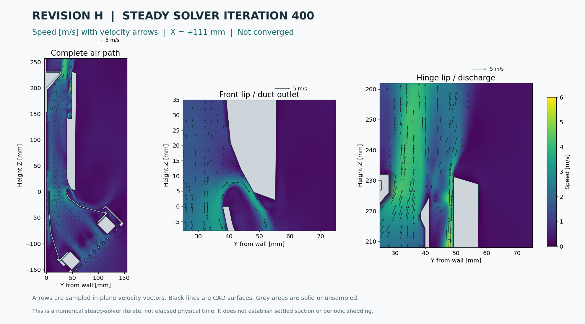
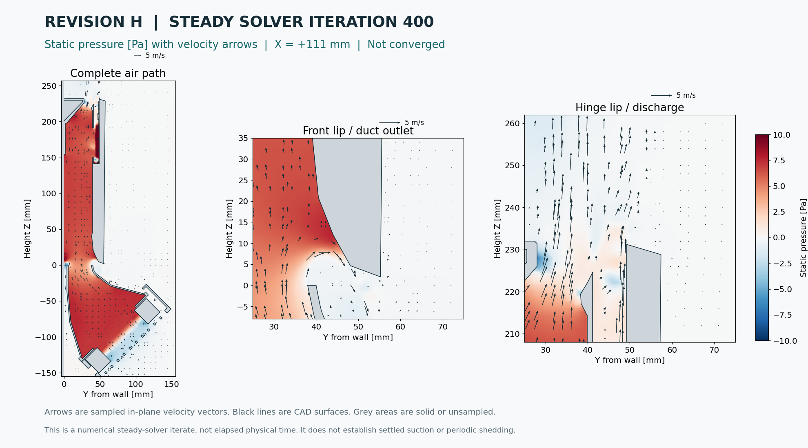

Revision H airflow run.
Recorded airflow around the duct outlet, front laptop lip and hinge discharge. Moving particles follow the saved velocity fields; original arrow videos preserve the sampled states. Open the moving-particle MP4.
Simulation running. Automatic hourly video updates are enabled through 04:00 PM EDT on September 09, 2026. A final update follows the native checkpoint and stop. These links always serve the latest published video.
Visual continuation from 38.3188 ms. The original video is followed by 572 new samples using fixed 80.93 µs steps and 12 workers. This prioritizes temporal progress and appearance; timestep accuracy will be assessed later. The earlier checkpoints remain available. Run timings, resource use and restart record.
Start with moving air: Watch the separate transient initialized from the flowing field. Its clock and checkpoints are kept separate from the original startup below.
Follow the moving air
Hourly visual continuation
5× faster playback
Hourly checkpoints
Started at . The original videos are cumulative and use every completed section sample available at their capture time. Earlier hourly files stay unchanged. Restart fields and their previous-step history are preserved for later continuation.
| Checkpoint | Compute elapsed | Physical time | Sampled states | Files |
|---|---|---|---|---|
| Requested checkpoint 1 | 0.415 h | 2.4143 ms | 47 | MP4 · Provenance |
| Requested checkpoint 2 | 0.712 h | 4.1143 ms | 81 | MP4 · Provenance |
| Requested checkpoint 3 | 18.149 h | 38.7235 ms | 923 | MP4 · Provenance |
| Requested checkpoint 4 | 18.253 h | 40.8277 ms | 949 | MP4 · Provenance |
| Requested checkpoint 5 | 19.121 h | 54.8286 ms | 1122 | MP4 · Provenance |
| Requested checkpoint 6 | 20.122 h | 62.3551 ms | 1215 | MP4 · Provenance |
| Requested checkpoint 7 | 21.117 h | 69.6388 ms | 1305 | MP4 · Provenance |
| Requested checkpoint 8 | 22.127 h | 77.4081 ms | 1401 | MP4 · Provenance |
| Requested checkpoint 9 | 23.073 h | 84.6108 ms | 1490 | MP4 · Provenance |
| Hour 1 | 1.001 h | 5.4643 ms | 108 | MP4 · Last frame · Provenance · Diagnostics |
| Hour 2 | 2.001 h | 8.7143 ms | 173 | MP4 · Last frame · Provenance · Diagnostics |
| Hour 3 | 3.001 h | 12.0143 ms | 239 | MP4 · Last frame · Provenance · Diagnostics |
| Hour 4 | 3.998 h | 14.3643 ms | 286 | MP4 · Last frame · Provenance · Diagnostics (gzip) |
| Hour 5 | 5.000 h | 16.6643 ms | 332 | MP4 · Last frame · Provenance · Diagnostics (gzip) |
| Hour 6 | 5.999 h | 19.0643 ms | 380 | MP4 · Last frame · Provenance · Diagnostics (gzip) |
| Hour 7 | 6.998 h | 21.3796 ms | 427 | MP4 · Last frame · Provenance · Diagnostics (gzip) |
| Hour 8 | 7.998 h | 23.3525 ms | 473 | MP4 · Last frame · Provenance · Diagnostics (gzip) |
| Hour 9 | 8.998 h | 25.0271 ms | 517 | MP4 · Last frame · Provenance · Diagnostics (gzip) |
| Hour 10 | 9.997 h | 26.5850 ms | 561 | MP4 · Last frame · Provenance · Diagnostics (gzip) |
| Hour 11 | 11.002 h | 28.1127 ms | 606 | MP4 · Last frame · Provenance · Diagnostics (gzip) |
| Hour 12 | 11.998 h | 29.6049 ms | 651 | MP4 · Last frame · Provenance · Diagnostics (gzip) |
| Hour 13 | 12.997 h | 31.0408 ms | 695 | MP4 · Last frame · Provenance · Diagnostics (gzip) |
| Hour 14 | 13.998 h | 32.4337 ms | 738 | MP4 · Last frame · Provenance · Diagnostics (gzip) |
| Hour 15 | 14.997 h | 33.8608 ms | 782 | MP4 · Last frame · Provenance · Diagnostics (gzip) |
| Hour 16 | 15.997 h | 35.3277 ms | 827 | MP4 · Last frame · Provenance · Diagnostics (gzip) |
| Hour 17 | 16.997 h | 36.8022 ms | 872 | MP4 · Last frame · Provenance · Diagnostics (gzip) |
| Hour 18 | 17.995 h | 38.3188 ms | 918 | MP4 · Last frame · Provenance · Diagnostics (gzip) |
{kind=link}
{kind=link}
{kind=link}
{kind=link}
{kind=link}
{kind=link}
{kind=link}
{kind=link}
{kind=link}
{kind=link}
{kind=link}
{kind=link}
{kind=link}
{kind=link}
{kind=link}
{kind=link}
{kind=link}
{kind=link}
How to read the video
The locator shows where the sections lie on the actual installed CAD. The whole air path is coloured by speed. Close-ups show static pressure and signed vorticity at X = +111 mm; arrows show the in-plane velocity. Black lines are CAD surfaces and grey areas are solid or unsampled. Pressure, speed and vorticity scales stay fixed across the hourly videos. The physical timestamp is the simulation time; playback is deliberately slowed.
Moving vorticity can reveal shear layers and vortices. A pressure depression near the lip would need to persist after startup before interpretation. A negative pressure alone does not identify a Bernoulli mechanism, and three apparent cycles would not establish converged shedding statistics.
What is being computed
The original startup uses the focused 3,193,565-cell Revision H mesh, with 0.25 mm targets in the sampled lip strips, and four CPU workers. It restarted at 0.1 ms from the same-geometry CPU benchmark, preserving the solver's time history. That benchmark started from quiet air. The older 18.2-million-cell, four-frame pilot is a separate record.
The standard mesh check passes, but expanded checks identify four low-determinant cells and 71,820 concave cells; wall-layer coverage remains poor. Four nominal 10 Pa fan actuators drive isothermal SST URANS flow. Fan curves, grille resistance and laptop passages remain approximate. This is not an experimentally validated flow or temperature prediction.
In the original adaptive run, complete planes at X = ±111 mm were saved every two solver steps, up to 50 µs apart. The new fixed-step visual extension saves each step. Full fields retain native binary precision and previous-step history for continuation. OpenFOAM disables gzip for binary fields; a separate lossless compression trial saved only about 5%. The solver records pressure and velocity probes, field bounds and ambient flux each step. New diagnostic downloads use lossless gzip; MP4 compression retains every plotted flow state.
Parallel steady-state initialization
A separate four-worker steady-state solve began at 1:03 p.m. Eastern, using the same Revision H geometry and fan forcing. At this publication snapshot it has completed 403 iterations; its state is complete. Numerical convergence has not been established.
These iterations are numerical adjustments, not elapsed fluid time. The purpose is to prepare a settled starting field for another transient shedding run. Residuals, pressure and velocity stability, conservation and recent turbulence bounding are checked before accepting that field. The startup videos above remain the original transient record.
The one-hour preparation stopped without meeting the steady convergence policy. Its flowing field is suitable only as a provisional transient initialization, with initial adjustment still to be observed. See the final convergence history · Recorded history data.
{kind=link}
Steady-solver images with velocity arrows
Actual sampled fields at iteration 400. This snapshot is still unconverged; the arrows show local in-plane velocity.


Vorticity with velocity arrows · Image provenance · Raw sampled section
{kind=link}
Flow at the front opening
At these two sampled side sections, upward channel flow is 7.3–7.7 times the net outward flow through the front opening. Both inward and outward flow occur across that opening. This is a line integral per unit span, not a full-width leakage fraction or a conservative three-dimensional flow split. The field remains unconverged.
Some outward flow could help cool the outer shell if it sweeps a warmer surface. This isothermal airflow model has no battery or heat-transfer solution, so it cannot quantify that benefit. A small smooth divider extension is a possible later comparison; the current geometry is unchanged.
Opening-flow measurements and exact section definitions · Left sampled section
Across the central 280 mm
A wider integration through the actual sampled fluid gives 2.90 L/s outward and 0.32 L/s inward at the front opening: 2.57 L/s net outward. The upward passage cut carries 19.51 L/s net. These defined open cuts do not form a closed device flow balance; they are an unconverged model snapshot, not measured fan delivery.
See how the flow varies across the width · Surface-integral data and exact bounds.
{kind=link}
Transient from an already flowing field
A separate recorded sequence begins with the steady-solver field. Its physical clock starts at zero, and initial adjustment remains because the source field is unconverged. Watch the flowing-field transient.